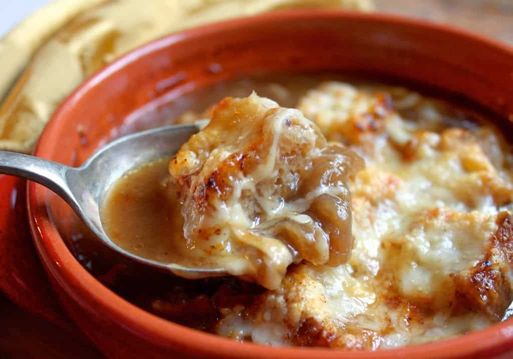

Julia Child's French Onion Soup

Julia Child, no introduction needed, has included this recipe in many cookbooks. My first time making French Onion Soup was from her book The Way To Cook. This dish is an all-time favorite of many people, French or otherwise. It is very much a comfort food, perfect for slow days in the cooler part of the year.
What You'll Need
- Heavy-bottomed 3 quart saucepan
- Wooden spoon
- Whisk
Ingredients
- 3 Tbs Butter
- 1 Tbs Light Olive Oil
- 8 cups Onions, thinly sliced
- 1/2 tsp Salt
- 1/2 tsp Sugar
- 2 1/2 quarts Beef Stock
Heat 2 cups of stock
- 4 to 5 Tbs Cognac
- 1 cup dry, white Vermouth
Steps
- Heat butter and oil in saucepan over medium heat
- Once butter has melted, stir in the onions and cover the pan
- Cook onions slowly until tender and translucent (~10 minutes)
- Stir in salt and sugar, and bring heat up to medium-high
Sugar will help onions brown
- Stir frequently until onions are a nice dark walnut color (~25-30 minutes)
- Once onions are browned, stir in flour and cook slowly (~3-4 minutes)
- Remove from heat and let cool for a moment
- Whisk in 2 cups of hot stock, mixing well
- Return to heat
- Add rest of the stock, Cognac, and Vermouth and bring to a simmer
- Cover loosely and let simmer very slowly for 90 minutes
- If liquid reduces too much add a little water
- Remove from heat and serve with bread and grated Swiss or Parmesan cheese
Usually you'll see French Onion Soup served with bread in it and cheese melted over the top, Julia Child includes this as a separate thing, so I won't be including those steps